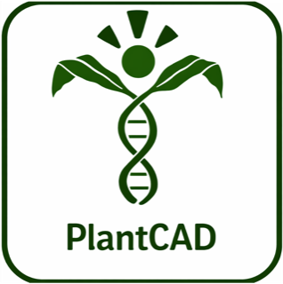
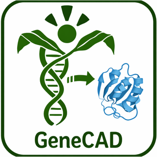

Home / Tools
Open-source softwareWe turn methods into open software so that discovery scales beyond our own bench. Our tools are used on more than 2,000 species by breeding programs and research groups worldwide.
A pangenome database and imputation framework that represents diversity as haplotypes, making low-cost sequencing usable for genomic prediction and breeding.
The long-standing workhorse for association mapping of complex traits in diverse samples — GWAS, GLM/MLM, and data handling for large genotype sets.
An R interface to TASSEL, bringing its association and linkage-disequilibrium engine into reproducible R workflows and pipelines.

A DNA foundation model that reads genomic sequence across flowering plants — scoring evolutionary conservation and functional signal straight from DNA. PlantCAD2 spans 65 angiosperm genomes.

Genome annotation with a DNA foundation model — predicting gene structure directly from sequence, without costly transcriptomic evidence, and generalizing beyond plants to animal genomes.
Genome Association and Prediction Integrated Tool — a widely used R package for GWAS and genomic selection with a broad menu of statistical models.
A high-performance Kotlin library for computational biology, giving modern, expressive building blocks for genomic data structures and pipelines.
Sensitive whole-genome alignment anchored on conserved genes — built for the deep structural diversity between plant genomes.